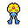
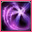
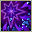
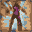
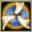
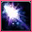
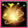
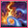
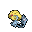

Pokédex / #480
Uxie #480
Psychic
When UXIE flew, people gained the ability to solve problems. It was the birth of knowledge.
Generation 4 · Sinnoh

Stats
| Attack | 75 | |
|---|---|---|
| Defense | 130 | |
| Sp. Atk | 75 | |
| Sp. Def | 130 |
In the wild
| Wild level | 100–100 |
|---|---|
| HP | 75 |
| Experience | 15 |
| Egg groups | – |
Evolution
- Does not evolve.
Moves
| Level | Move | Type | Category | Power | Energy | Cooldown | Effect | |
|---|---|---|---|---|---|---|---|---|
| 1 |  | Confusion | Psychic | Special | 50 | 60 | 12s | Confusion deals damage and has a 10% chance of confusing the target. |
| 5 | Rest | Psychic | Status | – | 100 | 180s | User sleeps for 5 seconds, but user is fully healed. | |
| 10 |  | Flail | Normal | Physical | 100 | 100 | 18s | Flail inflicts damage. Its power is higher when the user's HP is lower. |
| 15 |  | Endure | Normal | Status | – | 120 | 90s | The user endures any attack with at least 1 HP. Its chance of failing rises if it is used in succession. |
| 20 | Stored Power | Psychic | Special | 20 | 80 | 18s | Stored Power deals variable damage depending on the stat modifications of the user. When the user has no stat modifications, Stored Power's base power is 20. Its power increases by 20 for each stat boost the user has. | |
| 25 |  | Swift | Normal | Special | 60 | 60 | 9s | Swift deals damage and ignores changes to the Accuracy and Evasion stats. |
| 30 |  | Psybeam | Psychic | Special | 65 | 70 | 16s | Psybeam deals damage and has a 10% chance of confusing the target. |
| 35 | Mystical Power | Psychic | Special | 70 | 80 | 12s | Mystical Power attacks with a mysterious power and raises the user's Special Attack by one stage. | |
| 40 |  | Amnesia | Psychic | Status | – | 75 | 60s | Amnesia raises the user's Special Defense by two stages. |
| 45 |  | Psycho Cut | Psychic | Physical | 7 | 80 | 16s | Psycho Cut deals damage and has an increased critical hit ratio. |
| 50 | Extrasensory | Psychic | Special | 80 | 95 | 18s | Extrasensory inflicts damage and has a 10% chance of causing the target to flinch. | |
| 55 | Zen Headbutt | Psychic | Physical | 80 | 80 | 15s | Zen Headbutt deals damage and has a 20% chance of causing the target to flinch. | |
| 60 | Psyshock | Psychic | Special | 80 | 85 | 12s | The user materializes an odd psychic wave to attack the target. This attack does physical damage. | |
| 65 | Psychic | Psychic | Special | 90 | 100 | 21s | Psychic deals damage and has a 10% chance of lowering the target's Special Defense by one stage. | |
| 70 | Future Sight | Psychic | Special | 120 | 120 | 15s | Future Sight deals damage, but does not hit until two turns after the move is selected. |
Field abilities
HeadbuttFlash
Special abilities
Levitate
Egg moves
None
Technical machines
Calm MindDouble TeamDream EaterEnergy BallFacadeGiga DrainHidden PowerHyper BeamIron TailLight ScreenProtectPsychicRain DanceReflectRestSafeguardSandstormSecret PowerShadow BallShock WaveSolar BeamSubstituteThunderThunder WaveThunderboltToxicWater Pulse
Drops
| Item | Amount | Chance | |
|---|---|---|---|
| Mind Plate | 1–10 | 100% | |
 | uxie doll | 1 | 0.1% |